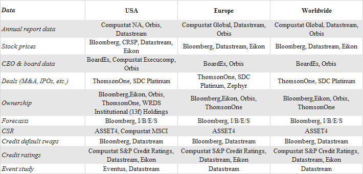
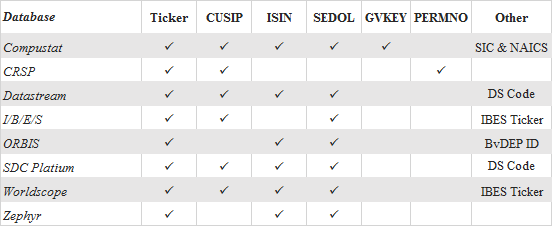

Working Papers @ SSRN
- Uncertainty and Corporate Innovation: Evidence from Terrorist Attacks (with Eliezer M. Fich and Dimitris Petmezas). Abstract: We examine the causal effects of uncertainty on corporate innovation by exploiting terrorist attacks. Counting victims to measure an attack´s strength, we find that as terrorism intensity increases, firms near the strikes exhibit declines in R&D spending, patenting, citations, patent originality, and innovation value. Nearby firms do not hire new inventors and their inventors tend to move to distant companies. These effects continue for up to three years after the attacks. Our findings suggest that terrorism curtails innovation by aggravating the economic uncertainty affecting firms near the attacks and by worsening the uncertainty about personal security faced by their employees.
- Does Safety Uncertainty Affect Acquisitions? (with Dimitris Petmezas and Nikolaos Karampatsas). Abstract: Using terrorist attacks as an exogenous shock to safety uncertainty, we provide causal evidence that firms located near terrorism-stricken areas receive lower takeover premium. The latter finding is reflected in lower target firm abnormal returns and synergy gains. Additionally, given that firms in terrorism-afflicted areas become less attractive, they are less likely takeover targets for two years after the terrorist attack, and acquirers from such areas are more likely to buy target firms from more distant locations. We attribute our results to human capital which is affected by terrorism induced safety uncertainty, consistent with Abadie and Gardeazabal´s (2008) theoretical model.
Work-in-Progress Papers
- The Impact of CSR on Firm Performance during Traumatic Events (with Dimitris Petmezas).
Techniques
- Standard Error: Is your standard error robust? In corporate finance work (with the use of panel data), it is common to report corrected standard errors that account for serial-correlation and cross-correlation. Packages in Stata and R now make the calculation of robust/clustered standard errors popular and easy. For my own record, I am compiling the list of Stata and R code here. Mitchell Petersen's Programming Advice also provides instruction and test data on estimating standard errors of panel data.
- Fixed Effects: What to do when you have many fixed effects? areg and xtreg commands in Stata limit only one fixed effect, while regress runs into Stata memory problems and also takes a long time to execute. A new command reghdfe written by Sergio Correia is a great alternative that allows for two levels of fixed effects, interactions between effects, and multi-way clustering. More importantly, it is fast!
- Regression Outputs: Estout is a useful Stata ado-file package that creates a table of regression results either in the text file format, in the HTML format, or in the CSV format. See more details here about how to download and use it.
- Access WRDS data using SAS/R: WRDS data is accessible remotely from the comfort of local computer, through SAS and R. However, it requires a small amount of setup to initially connect. See this sample SAS/R Code for establishing a connection to WRDS and some simple queries to retrieve data from the database. Further guides for setting up a connection to WRDS can find here and here.
- Fama and French Industry Classification: Here are some ways to creates Fama-French industry classifications based on SIC codes. More information about the classification can be found in Ken French’s website.
- Winsorize: How to deal with outliers in the data set? In Stata, you can easily use winsor or winsor2 commands to winsorize or trim extreme observations. Alternatively, you can find a SAS macro here.
- Database Navigator: Where to find which data

-
Company Identifiers: Many databases have unique codes or names which specifically identify a company (or group/fund)
in a database. Sometimes these identifiers are not specific to one database and then we can use them to merge company
data from more than one database into a new data set for research. Some company identifiers, however, appear to be unique
and unchangeable but when you research them, carefully they are not and may (through time) even be used by more than one
company. A typical example is the Ticker symbol used by companies at stock exchanges. CUSIP and the ISIN are often reasonably
reliable identifiers. Below is the table that lists identifiers available in major financial databases.

- Ticker and company name can change over time. Matching databases by ticker or company name is difficult and extra efforts are needed for a precise matching. Thus, this should be the last resort.
- CUSIP is an alphanumeric code that identifies a North American financial security. A full CUSIP code consists of 9 digits. The first 6 digits of a CUSIP identify the company, digits 7-8 describe the security and the 9th is check digit. For example, the full CUSIP code for Microsoft Inc is: ‘594918104’.
- A company can have multiple 8-digit Cusip codes at the same time, but the first 6 digits of these codes are identical. For instance, Apple's common stock CUSIP is ‘03783310’ and a CUSIP for one of Apple's outstanding bonds is ‘037833AK’.
- CUSIPs can change over time but are never reused. NCUSIP is the historical CUSIP. CUSIP is the current NCUSIP. The major matching variable across databases are NCUSIP. The NCUSIP in Thomson One, I/B/E/S, and TAQ is labeled as 'CUSIP'.
- Linking CRSP to Compustat: if you have access to the Compustat-CRSP Merged (CCM) database, they have done all the hard work of matching CRSP's PERMNO's to Compustat's GVKEY's. You can directly download price/accounting data from the database or use a CCM Linktable as here. If you do not have access, so you have to match them manually. Rui Dai and Mattia Landoni have very helpful tutorials about linking CRSP/Compustat data.
- Linking SDC Platium to CRSP/Compustat: the difficulty in matching these databases is that SDC does not have permno, gvkey, and different cusip (6-digit CUSIP), while CRSP/Compustat only retain the latest CUSIP. Thus, we need to use historical CUSIPs, i.e. CUSIPs valid at the exact time of each merger. In particular, we use CRSP to obtain historical CUSIP (item NCUSIP) for each day of sample period and then merge with SDC data.
- Link IBES ticker to Compustat GVKEY: you can use the CIBESLINK macro to create a linking table CIBESLNK between IBES ticker and Compustat GVKEY based on IBES ticker-CRSP permno (ICLINK) and CCM CRSP permno - Compustat GVKEY (CSTLINK2) link.